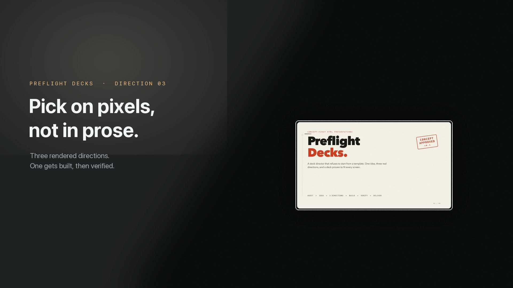
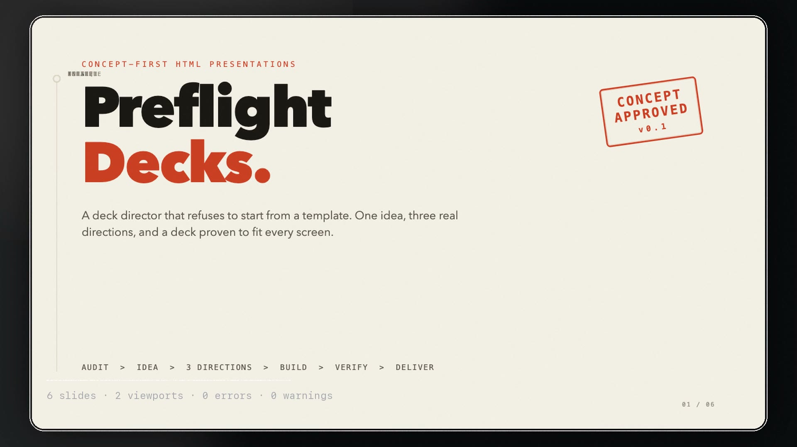
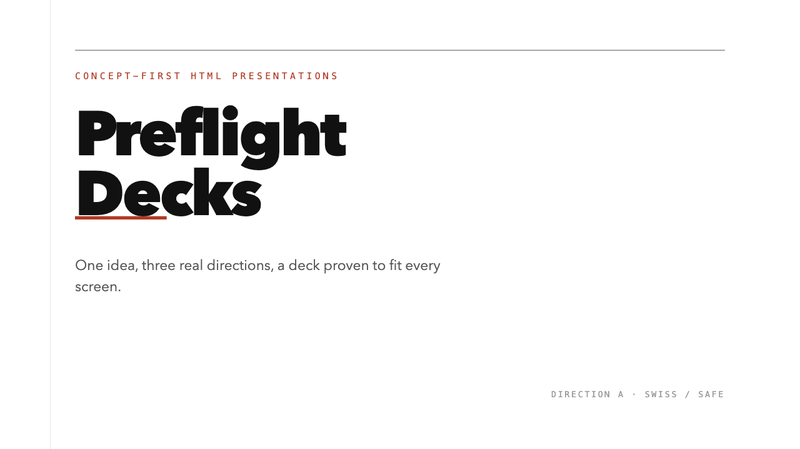
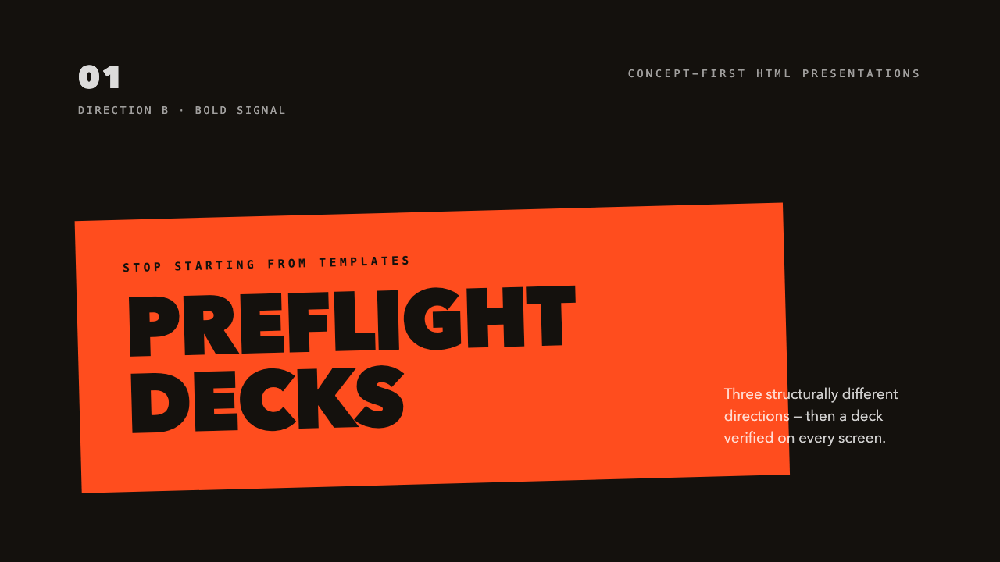
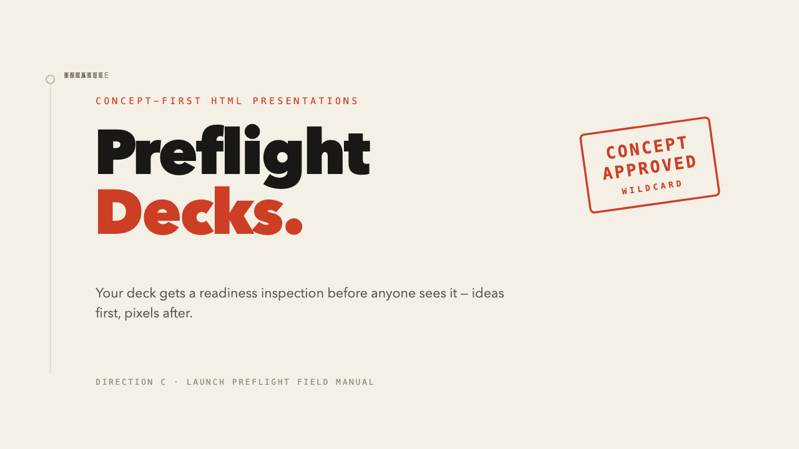
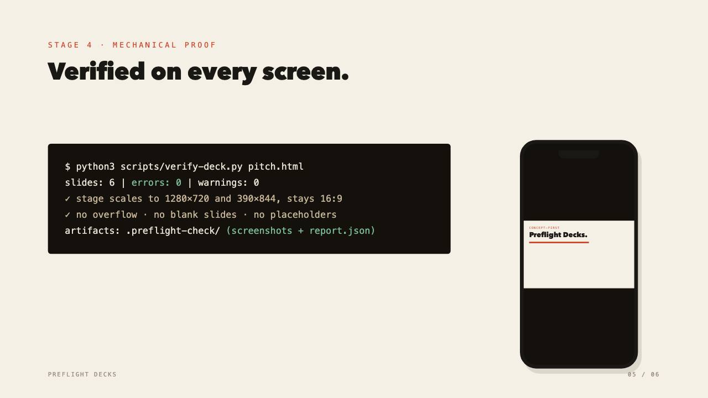

Three structurally different directions, chosen on pixels — then verified on a projector and a phone before delivery.


Scroll sideways — each direction is a real rendered preview, not a description.




No full deck exists until three structurally different directions have been rendered and one is chosen on pixels.
Every draft is scored from screenshots across six dimensions; a weak concept vetoes the run however polished the pixels are.
Playwright screenshots every slide at 1280×720 and 390×844 and fails the build on overflow, escapes, blanks or placeholders.
One sentence worth arguing, a motif grown from the content, and three real previews before a full deck exists.
Six scored dimensions from actual screenshots — concept quality can veto the run.
Projector + phone checks with a CI-shaped exit code: 0 pass, 2 hard errors, 1 tooling.